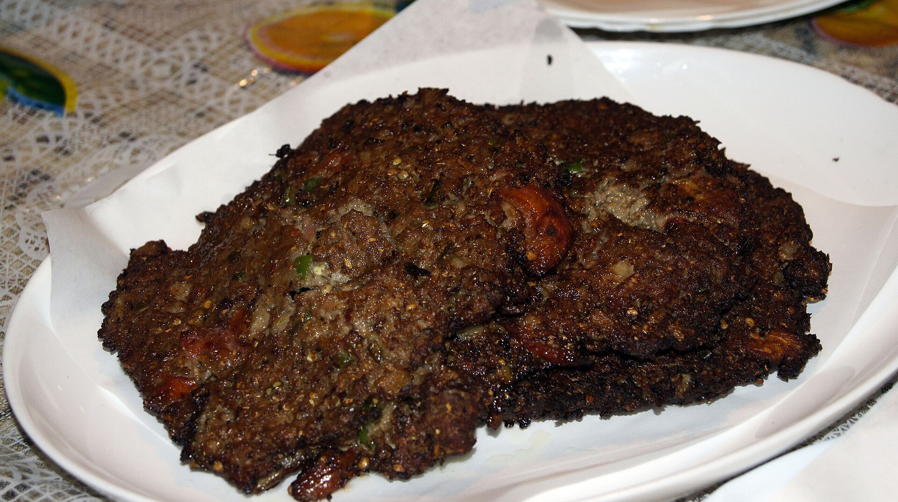

Chapli Kabab

About Chapli Kabab
Chapli kebab is a beloved Pakistani dish, hailing from the historical city of Peshawar. This flavorful kebab is renowned for its unique blend of spices and its distinctive flat, oval shape. The name "chapli" is derived from the Pashto word "chaprikh," meaning "flat," perfectly describing the kebab's appearance.
Chapli kebabs are typically made with minced beef or mutton, along with a variety of aromatic spices like cumin, coriander, red chili powder, and garam masala. The meat is often marinated in yogurt and lemon juice, which tenderizes it and enhances the flavor. The kebabs are then grilled to perfection over hot coals, resulting in a crispy exterior and juicy interior.
Ingredients
- 1 pound ground beef or lamb
- 1/2 cup finely chopped onion
- 1/4 cup finely chopped cilantro
- 1/4 cup finely chopped mint
- 2 teaspoons ginger-garlic paste
- 1 teaspoon cumin powder
- 1 teaspoon coriander powder
- 1 teaspoon red chili powder
- 1/2 teaspoon garam masala
- 1/2 teaspoon salt
- 1/4 teaspoon black pepper
- 1 egg, beaten
- 1 tablespoon all-purpose flour
- Oil for frying
Baking Process
- Combine Ingredients: In a large bowl, combine the ground meat, onion, cilantro, mint, ginger-garlic paste, cumin powder, coriander powder, red chili powder, garam masala, salt, pepper, egg, and flour. Mix well until all the ingredients are thoroughly combined.
- Shape Kebabs: Divide the meat mixture into equal portions and shape them into flat, oval patties.
- Fry the Kebabs: Heat oil in a skillet over medium heat. Carefully place the kebabs in the hot oil and fry until golden brown on both sides.
- Serve: Serve hot with naan, paratha, or any other bread of your choice.